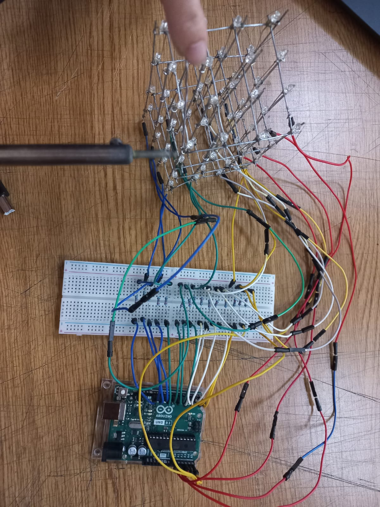
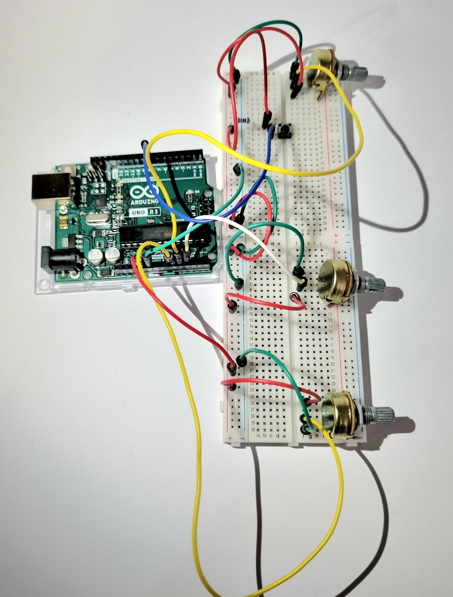
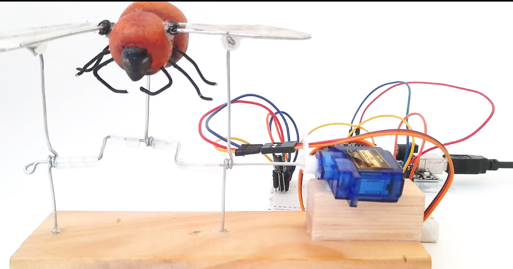

universidad de chileuniversidad de chile
facultad de arquitectura y urbanismofaculty of architecture and urbanism
escuela de diseñodesign school
primer semestre 2022 (marzo - julio)first semester 2022 (march - july)
primer semestre 2023 (marzo - julio)first semester 2023 (march - july)
curso electivo de diseño, donde estudiamos los fundamentos de electrónica y computación física, incluyendo el estudio de código aplicado a microcontroladores.elective course of design, where we study the foundations of electronics and physical computing applied, including programming applied to microcontrollers.
aprenderemos a usar sensores y actuadores, incluyendo potenciómetros, zumbadores, pulsadores, y su conexión a placas Arduino, además de protocolos como serial, MIDI y OSC.we will learn how to use and connect sensors and actuators, including potentiometers, buzzers, pushbuttons, and their conection to Arduino boards, and the serial, MIDI, and OSC protocols.
el trabajo se hace de forma pública y compartida, con les estudiantes compartiendo sus apuntes y realizando trabajos grupales de investigación aplicada.all the work will be done in public, collaboratively, with the students sharing their notes and doing group projects of applied research.
aarón montoya-moraga: profesore, creadora del cursoprofessor, creator of the course
ignacio passalacqua: ayudante (2023)ayudante (2023)


